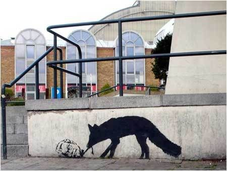

<!DOCTYPE html>
<html>
<head>
    <title>artiste</title>
    <meta charset="utf-8">
    <link rel="stylesheet" type="text/css" href="mycss.css">
    <link rel="stylesheet" type="text/css" href="stylsheet.css">
    <script src="myjs2.js"></script>
</head>
</html>
<body>
<header>
    <nav>
        <a href="main.html"></a>
        <ul>
            <li><a href="main.html">Home page</a></li>
            <li><a href="index.html">Arts</a></li>
            <li><a href="facts.html">Facts</a></li>
        </ul>
    </nav>
</header>
<section>
    <h1>Mission and technics</h1>
    <article>

        <div class="side">
        <p><h1>technics</h1>His Technique
            Stencils are traditionally hand drawn or printed onto sheets of acetate or card, before being cut out by hand. Because of the secretive nature of Banksy's work and identity, it is uncertain what techniques he uses to generate the images in his stencils, though it is assumed he uses computers for some images due to the photocopy nature of much of his work.<h4>Banksy about his technique: </h4>
        <blockquote>"I use whatever it takes. Sometimes that just means drawing a moustache on a girl's face on some billboard, sometimes that means sweating for days over an intricate drawing. Efficiency is the key."</blockquote> </p>
        </div>
        <div class="side">
            <p><h1>mission</h1>Banksy’s own mission statement, ‘Art should comfort the disturbed and disturb the comfortable’,
            Banksy displays his art on publicly visible surfaces such as walls and self-built physical prop pieces.</p></div>
    </article>
</section>
<div class="gallery">
    <h1>Gallery of <span id="grafitti">G r a f i t t i</span></h1>
    <h3>1997-2002</h3>
    <div id="slider">
        

        <div id="precedent" onclick="ChangeSlide(-1)"><</div>
        <div id="suivant" onclick="ChangeSlide(1)">></div>
    </div>
    <h3>2003-2008</h3>
    <div id="slider">
        

        <div id="precedent" onclick="ChangeSlide2(-1)"><</div>
        <div id="suivant" onclick="ChangeSlide2(1)">></div>
    </div>
    <h3>2009-2014</h3>
    <div id="slider">
        

        <div id="precedent" onclick="ChangeSlide3(-1)"><</div>
        <div id="suivant" onclick="ChangeSlide3(1)">></div>
    </div>
    <h3>2015-2018</h3>
    <div id="slider">
        
        <div id="precedent" onclick="ChangeSlide4(-1)"><</div>
        <div id="suivant" onclick="ChangeSlide4(1)">></div>
    </div>
<span class="sort">
</span>
<footer>
    <h2>Check instagram for more artwork</h2>
    <a href="https://www.instagram.com/banksy/"></a>
</footer>
</body>